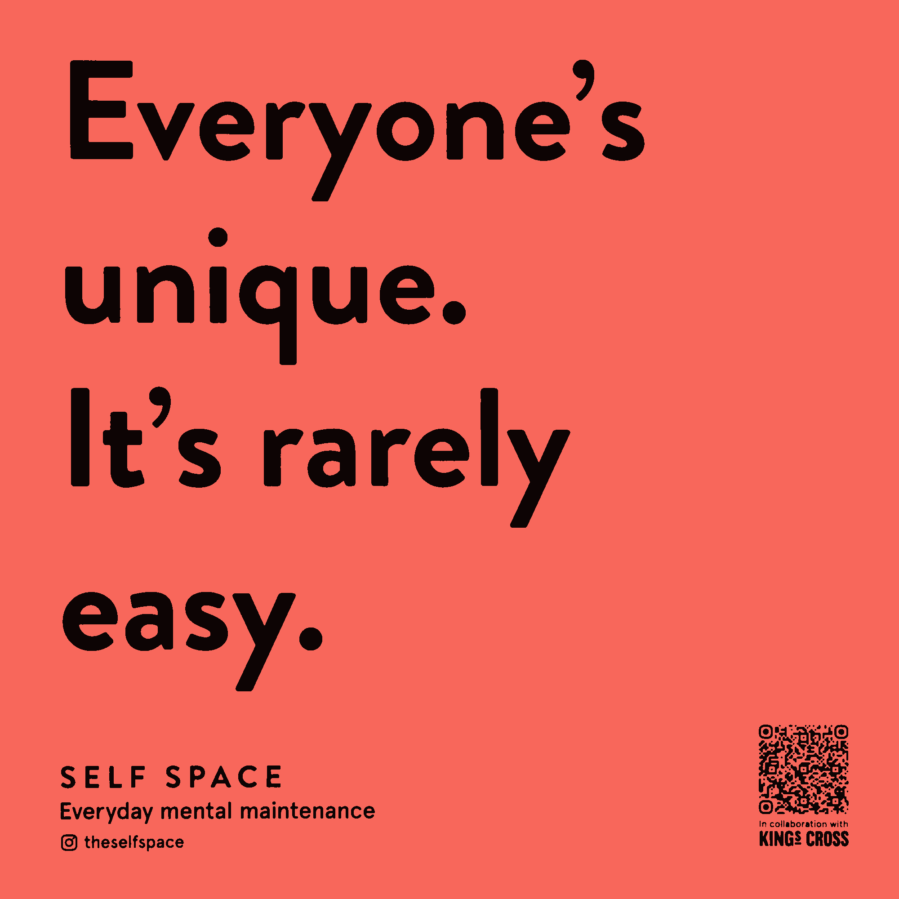

Happy Tuesday! Thank you for supporting the Daily Bulletin project.
- Suggest improvements to the Daily Bulletin project.
- Unsubscribe if you no longer wish to receive emails from the Daily Bulletin project.
Wellbeing Inspirations
Want to contribute to a future Daily Bulletin? Share your inspirations to give everyone some morning wellbeing energy!
Quote of the Day

On display at King's Cross.
Delicious Dinings
| Day | Meal | Options |
|---|---|---|
| Tue | Breakfast | Continental Counter |
| Lunch | Leek, Potato & Sharp Cheddar Pie 🌱 | |
| Aubergine Milanese 🌱 | ||
| Dinner | Irish Stew | |
| Vegetarian Cottage Pie 🌱 | ||
| Wed | Breakfast | Hot Breakfast |
| Lunch | Beefy, Cheesy Macaroni w/ Jalapeños & Tortilla Chips | |
| Enchiladas w/ Mushroom & Pea Protein 🌱 | ||
| Dinner | Vegetarian Nasi Goreng Pea Protein 🌱 |
The catering team would like to remind everyone to wash their hands before coming to the dining hall, and to refrain from eating in the servery area. Thank you!
Retrieved from Shared Weekly Menu. For reference only; accuracy not guaranteed.
Important Events
| Day | Time | Event | Location |
|---|---|---|---|
| Tue | 19:30–20:30 | SusCo | Great Hall |
| Wed | 17:00–19:00 | Wellbeing Drop-in | Health Centre |
| 19:30–20:30 | Drag Show | Great Hall |
Retrieved from What's On This Week.
Today in History
- 1337 – Edward the Black Prince was created Duke of Cornwall, the first English dukedom.
- 2011 – First Libyan Civil War: The United Nations Security Council adopted Resolution 1973, authorizing military intervention in Libya to protect civilians.
Retrieved from Wikipedia.
Today in News
- Iranians cross into northern Iraq for cheaper food, internet and work after border reopens
- El Salvador has arbitrarily detained nationals deported from the US, Human Rights Watch says
- Europeans seek clarity about Trump’s Iran war aims before agreeing to his warship demands
Retrieved from the Associated Press.